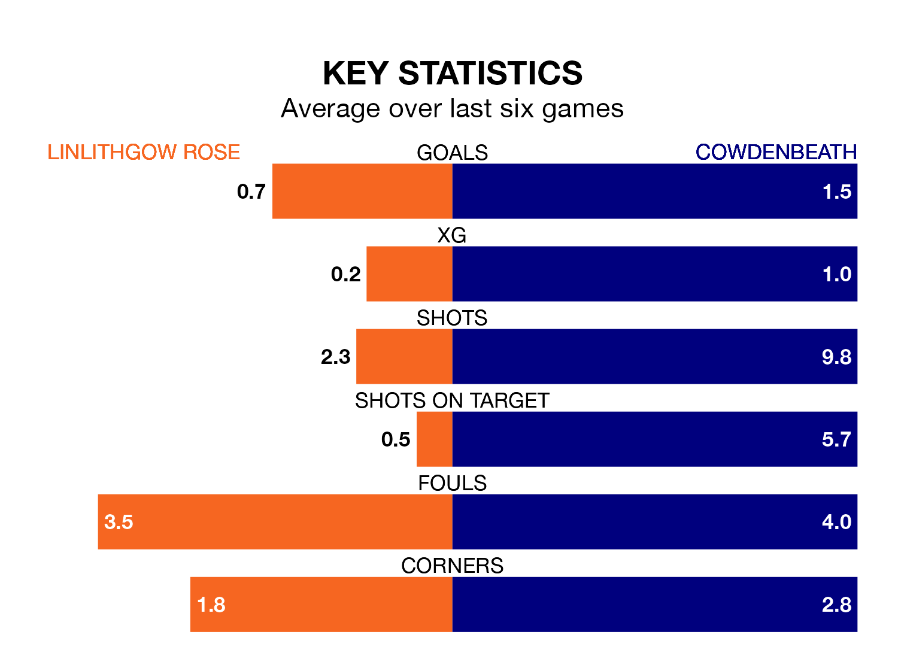

Linlithgow Rose face Cowdenbeath at Prestonfield on Saturday looking to secure a first win in six Lowland Football League games.
Linlithgow Rose have lost four and drawn one matches since they last earned three points – against Edusport Academy on February 24.
They face a Cowdenbeath side who have won two and drawn one over that time.
With 52 goals in 30 games so far this season, Linlithgow Rose are scoring at the league's average rate with 1.7 goals per game. And they are conceding fewer than average, letting in 35 goals at a rate of 1.2 per game.
Cowdenbeath, meanwhile, are below average scorers, with 1.6 goals per game. They have also conceded 1.6 goals per game.
The away side are 12th in the table after 30 games, of which they have won 10 and drawn 10, earning 40 points.
The hosts are four places ahead of Cowdenbeath in eighth, with 12 wins and nine draws putting them on 45 points.
Over the last two years, Linlithgow Rose and Cowdenbeath have played each other twice. Cowdenbeath won one of them and they drew the other.
Their last meeting was on November 4, when they played out a 1-1 draw.
Linlithgow Rose's last match was on March 23, a 2-1 loss against Bo'ness United.
Cowdenbeath lost 2-1 against East Stirlingshire last time out, also on March 23.
Updated: 12:39 (UTC), 26/03/24